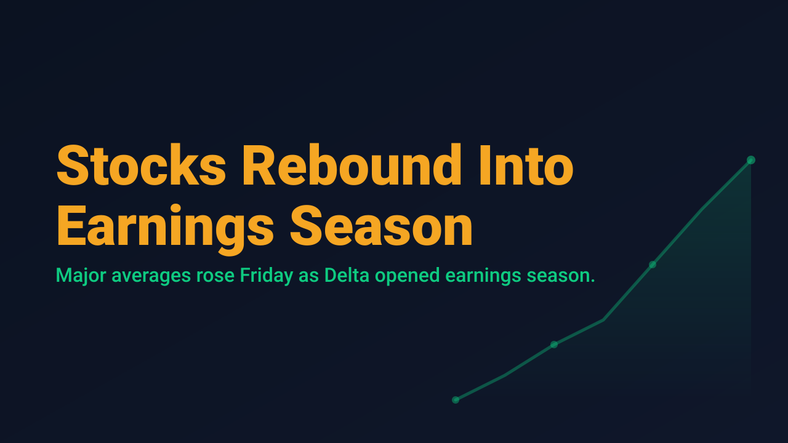
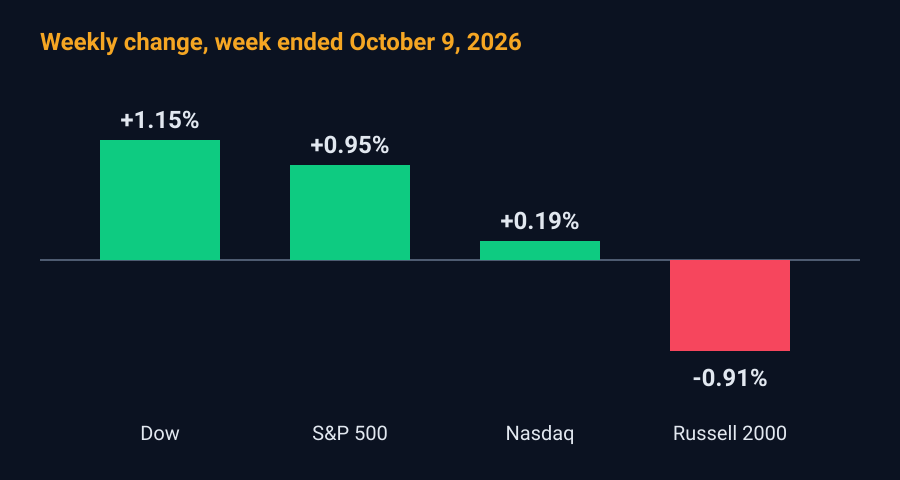

Stocks Rebound Into Earnings Season

U.S. equities finished Friday, October 9, higher and closed out a volatile week with mixed results across the major averages. The Dow Jones Industrial Average rose 423.37 points, or 0.83%, to 51,655.01. The S&P 500 gained 0.59% to 7,811.51, and the Nasdaq Composite added 0.64% to 27,366.17. The Russell 2000 advanced 0.52% to 2,808.57, according to TheStreet's closing summary.
The rebound followed a sharp technology selloff on Thursday, which came after a report that OpenAI's annualized revenue run rate was roughly $20 billion below a figure that had circulated in late September. Friday's recovery was helped by an easing in oil prices after President Trump said the United States would not attack Iran before the November 3 midterm elections, and by a rebound in technology shares.
The weekly picture is less uniform than the daily gains suggest. For the week, the Dow gained 1.15% and the S&P 500 gained 0.95%, while the Nasdaq managed only 0.19%. The Russell 2000 fell 0.91%, the only major index to decline. Leadership therefore narrowed toward the large-cap benchmarks, while small caps, which are typically more sensitive to financing costs, lagged.

Earnings season began with a cautious signal. Delta Air Lines reported third-quarter adjusted earnings per share of $1.72 against a consensus of $1.89, and cut its 2026 adjusted EPS outlook to a range of $5.10 to $5.60 from $6.50 to $7.50, citing persistently high fuel prices, according to Investrade. Options markets had priced an implied move of roughly 4.33% for the stock, per TipRanks. Elsewhere, Humana rose 12.18% after the Centers for Medicare and Medicaid Services restored a 4-star rating to its flagship Medicare Advantage contract, while T-Mobile and AT&T fell 9.54% and 6.35% respectively, and tower stocks rose on a SpaceX spectrum agreement.
The macro backdrop remains restrictive. The Federal Reserve raised rates in September, and the 10-year Treasury yield remained above 5% on Friday. The preliminary University of Michigan sentiment index fell to 46.3 from 48.1, below the 47.6 forecast. Next week brings Wednesday's CPI report and the first major bank earnings on Tuesday, October 13.
For swing traders, the narrowing of weekly leadership and the cautious opening to earnings argue for selectivity rather than broad exposure. Event risk is concentrated in the coming week, with CPI and bank results likely to set the tone for the rest of the reporting period.